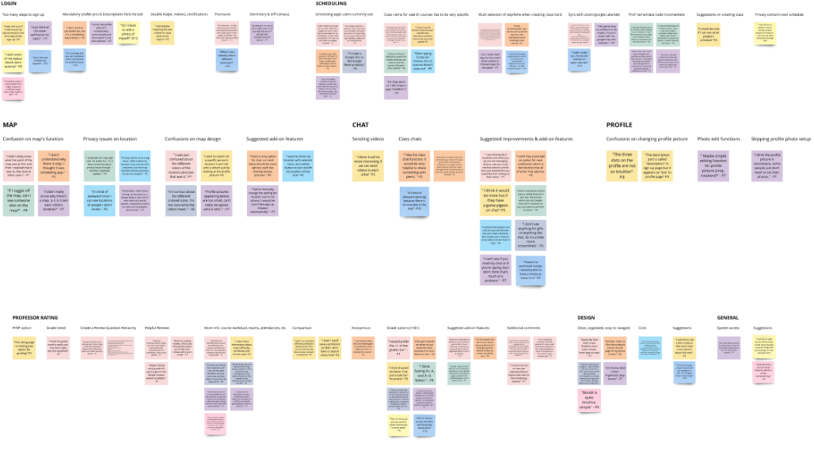
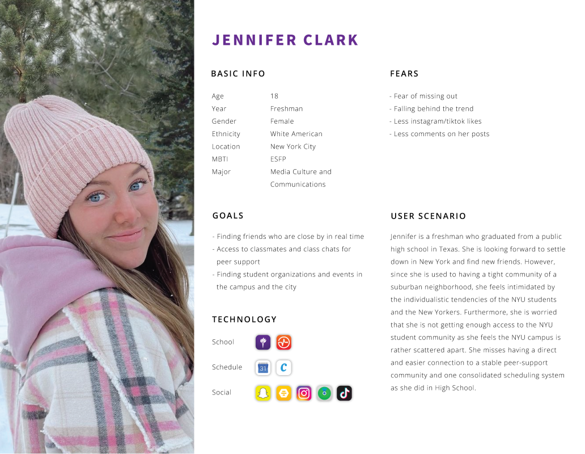
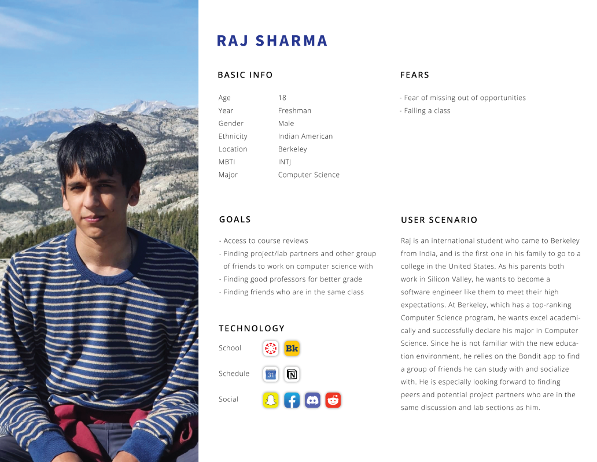
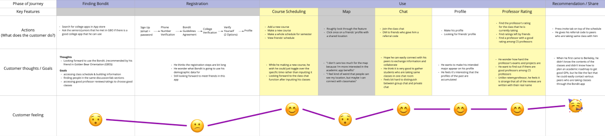
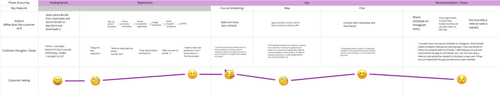
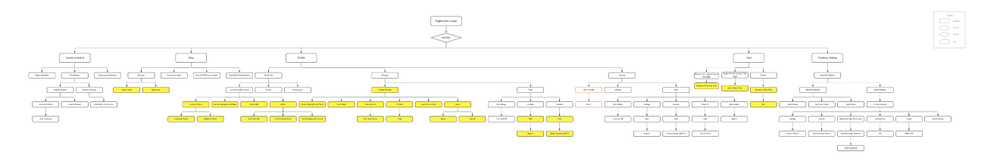
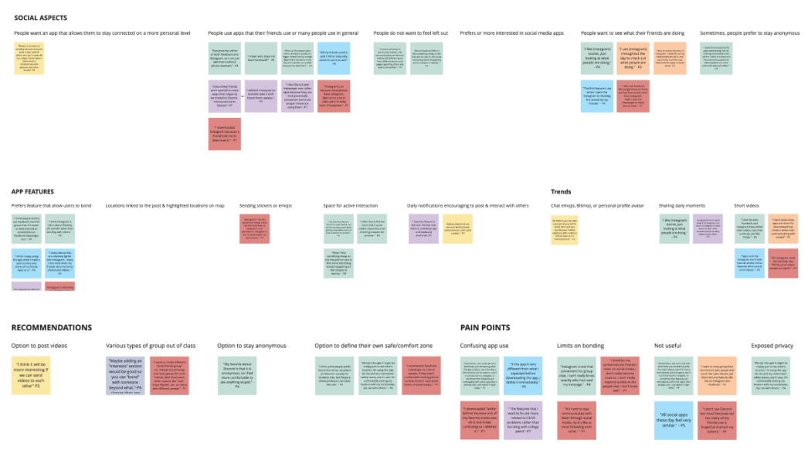

Bondit is a location-based social media app for US college students. The app aims to promote bonding between college peers through features including shareable course schedule, course group chat, map, friend discovery feed, and chat. However, the app provided too many features, and the MAU, DAU, and user retention remained low. In this study, we set out to understand gen-z trends for bonding to make the product more useful and engaging for college students.
Team
1 project leader, 1 UX lead, 14 UX researchers
Role
UX researcher, UX designer
Timeline
Jan 2022 - May 2022 (five months)
Bonding can be difficult and awkward for college students--especially when they are stuck in large lecture halls (or a campusless school like NYU). Bondit seeks to aid in this process. To achieve this, we aimed to find what students find overwhelming or lacking about the current iteration of Bondit. What do college students consider when forming new friendships, and how can we use this information to increase Bondit’s user retention and acquisition?
We conducted competitive analysis on ten social media apps, specifically those targeting college
students,
to understand the role of Bondit within the greater app market.
Apps: Saturn, Poparazzi, GroupMe, Patio, Reddit, Corq, Clubhouse, ZeeMe, LoopChat, TimeTree
Major Themes
Discovering areas of focus
Examining Gen Z trends of bonding with peers
Finding ways Bondit can target latent user needs
To understand our areas of focus, we conducted 10 user interviews about Bondit’s current frames to identify the pain points. We then performed open coding and created an affinity diagram to identify key takeaways.
Long login process frustrating to users
Privacy concern over location sharing in map feature
Unclear app identity due to an overwhelming number of features
Based on these takeaways, we created two personas based on students from NYU and UC Berkeley--schools most of our interns were from--to represent Bondit users. While Jennifer utilizes Bondit to socialize, Raj seeks academic opportunities on the app.
 We created user journeys based on these two personas to showcase how Bondit may be used based on differing goals. Jennifer's key features were map and chat while Raj's key features were course scheduling, chat, and professor ratings.
 Finally, to determine potential areas of focus and optimize the flow of the app, we created an information architecture based on Bondit's key features: course schedule, map, profile, chat, and professor rating. Through this, we were able to find a minor bug where friend's profiles did not appear in the profile tab when filtered by peer.
We then examined Gen Z trends of bonding with peers with a focus on social networking. We interviewed 7 participants.
Users tend to use app friends use due to FOMO (“a lot of my friends use ___”)
Users like to see what their friends are doing, but can be sensitive about their own privacy
Users are aware of the limitations of social media and want to connect with others at a more personal level through features like DM
Finally, we found ways Bondit can target latent user needs through two studies.
Study One:
Objectives:
Understanding pain points and needs in regards to college bonding
Identifying social media apps that Gen-Z college students use for
college bonding and why they use the apps
Identifying the pain points and needs in regards to the social
media apps they use for college bonding
We interviewed 10 people.
Time commitment and different backgrounds most frequently mentioned as pain points for bonding
Gen Z students most frequently use features like story and DM
Similar interests are considered the most important for bonding, even over things like age and major
Study Two:
Objectives:
Understanding user behavior and needs in regards to the onboarding
feature of social media apps for college bonding
Understanding user behavior and needs in regards to identifying
college peers to bond with within social media apps for college bonding
Understanding user behavior and needs in regards to interacting with college
peers to bond with within social media apps for college bonding
We conducted cognitive walkthroughs on 15 participants.
Bondit’s login process is still too long and has minor issues
Continued dislike concern, over location sharing on map feature
Various suggestions for board features including filters, rank system
Bondit is in the process of redesigning their UI based on the insights from this study. Stay tuned to see them!